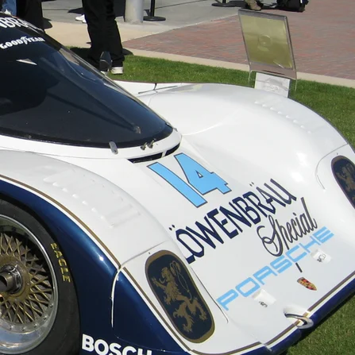

International Motor Sports Association
The Birth of
American Endurance
Founded in 1969 by John Bishop, IMSA became the definitive arena for sports car racing in North America — a series defined by machinery pushed to its absolute limit, day and night.
IMSA Legends

 United States
United StatesOne of the greatest endurance racers America has produced. Hurley Haywood shares the record for most Daytona 24 Hours victories, with wins spanning almost two decades. He also won Le Mans three times, in three different Porsches, and was one of the first drivers to complete endurance racing's informal Triple Crown of Daytona, Le Mans and Sebring.
 United States
United StatesScott Pruett matched Hurley Haywood's record of five Daytona 24 Hours wins, the last four with Chip Ganassi Racing. He won titles in almost everything with a roof: IMSA GTO, Trans-Am and five Grand-Am prototype championships. He also won his class at Le Mans with Corvette. He retired after the 2018 Rolex 24, fifty years after he started racing.

United StatesThe driver who defined IMSA's GTP golden age. Al Holbert won five IMSA GT championships, three of them in the GTP era, and once held the record for most IMSA race wins with 50. He also won Le Mans three times and the Daytona 24 Hours twice with Porsche, and ran Porsche's North American motorsport division. He died in a plane crash in 1988, aged 41.
Prototype Icons

962
The most successful sports prototype ever built. Designed for IMSA's GTP rules, the 962 won the IMSA title every year from 1985 to 1988 and the Daytona 24 Hours five times. As the 962C it also won Le Mans in 1986 and 1987. Private teams kept racing them for almost a decade.

XJR-9
The car that broke Porsche's grip. Built by Tom Walkinshaw Racing, the V12 XJR-9 won the Daytona 24 Hours on its debut in 1988. Later that year it won Le Mans, Jaguar's first win there since 1957 and the first time since 1980 that Porsche didn't win.

DPi-V.R
The king of the DPi era. Powered by a 5.5-litre V8, the Cadillac won the Daytona 24 Hours four years in a row from 2017 to 2020 and took three IMSA championships. It won 27 of its 59 races, making it the benchmark prototype of modern IMSA.
"If everything seems under control, you're just not going fast enough."
Mario Andretti